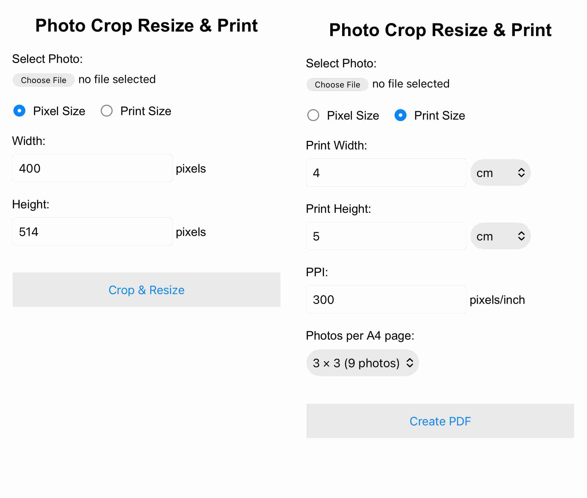

A simple browser-based tool for preparing photographs for digital use and printing.
Open Photo Crop Resize & PrintWhen you tap on the above button, a web page with the following user interface will open with two radio buttons as options. Selecting either of the rwo options will change the UI as shown below for the two cases.

Photo Crop Resize & Print allows you to either:
The application can also create an A4 PDF containing 1, 4, or 9 copies of the photograph.
Select a photograph and enter the required:
The app automatically crops the photograph to the required aspect ratio and then resizes it to the exact pixel dimensions.
Example: 400 × 514 pixels
This is useful for applications such as passport, visa and other online photo requirements where an exact pixel size is specified.
The resulting photograph is saved as a JPEG file.
Instead of specifying pixels, you can specify the physical size at which you want the photograph prepared for printing.
You can enter:
The application calculates the required pixel dimensions from the physical size and PPI, then automatically crops and resizes the photograph accordingly.
Example: 4 × 5 cm at 300 PPI
This produces an image of approximately 472 × 591 pixels.
The Print Size option can create an A4 PDF containing multiple copies of the photograph.
The photographs are placed on an A4 page with equal spacing while maintaining the exact physical dimensions specified.
This can be useful when several copies of the same photograph are required for printing.
The application does not simply stretch a photograph to fit the requested dimensions. Instead, it:
This helps preserve the proportions of the subject in the photograph.
The photograph is processed in the browser on your own device.
The application does not require the photograph to be uploaded to a server for processing.
The application is designed to work in modern web browsers on:
The application is hosted using GitHub Pages and can be accessed directly through the web.
Suppose you have a photograph from a mobile phone and need a 4 × 5 cm photograph at 300 PPI.
The application automatically performs the required cropping and resizing and creates an A4 PDF ready for printing.
Many photo requirements specify either an exact pixel size or an exact physical print size. Converting between pixels, physical dimensions and PPI can otherwise require separate software or manual calculations.
This tool brings these operations together in one simple interface.
The application is built using standard web technologies:
No installation is required. Simply open the web application in a browser and select a photograph.
Send your feedback to: natsy_10@yahoo.com